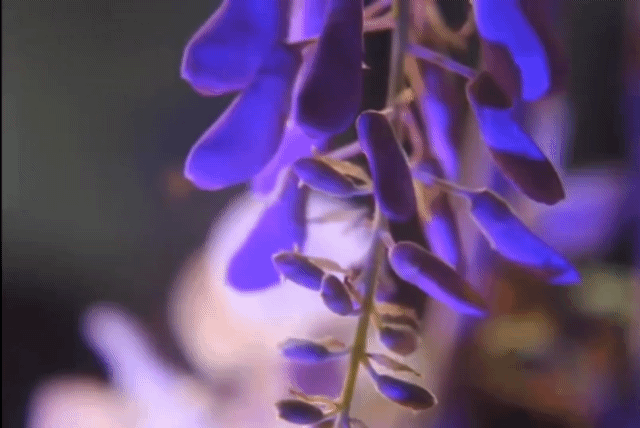
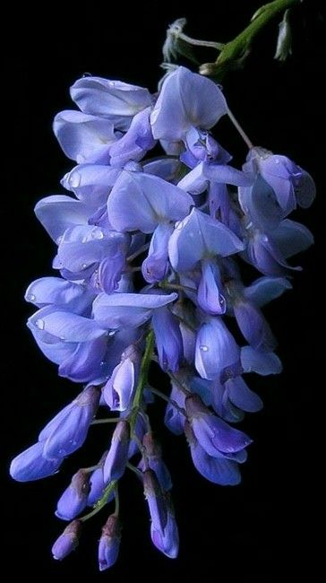
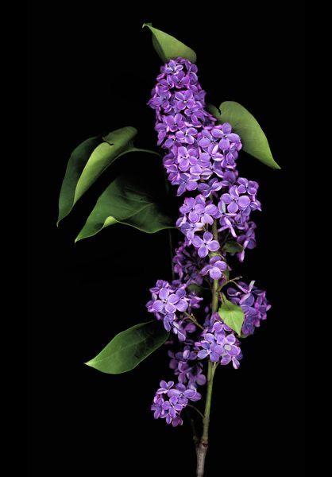
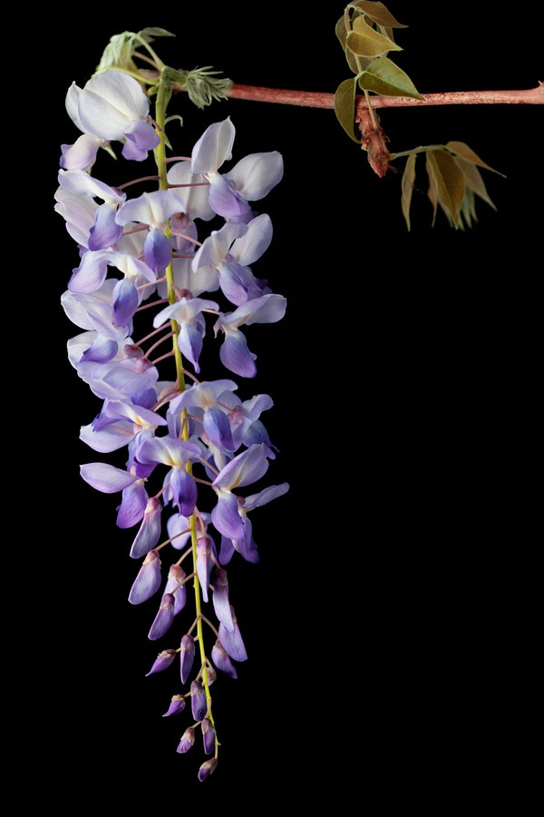

Wisteria sinensis (aka. Wisteria) is a breathtaking flowering vine known for its cascading clusters of violet, lavender, or white blooms that drape elegantly from trellises, pergolas, and old trees. When in full bloom during spring, it creates a dreamy, almost fairy-tale atmosphere, filling the air with a light, sweet fragrance. This fast-growing plant is admired not only for its beauty but also for its ability to transform ordinary spaces into enchanting scenes. Though its twisting vines can become heavy and woody over time, careful pruning helps shape its growth and encourages more abundant flowering. Wisteria is often seen as a symbol of love, longevity, and new beginnings.


